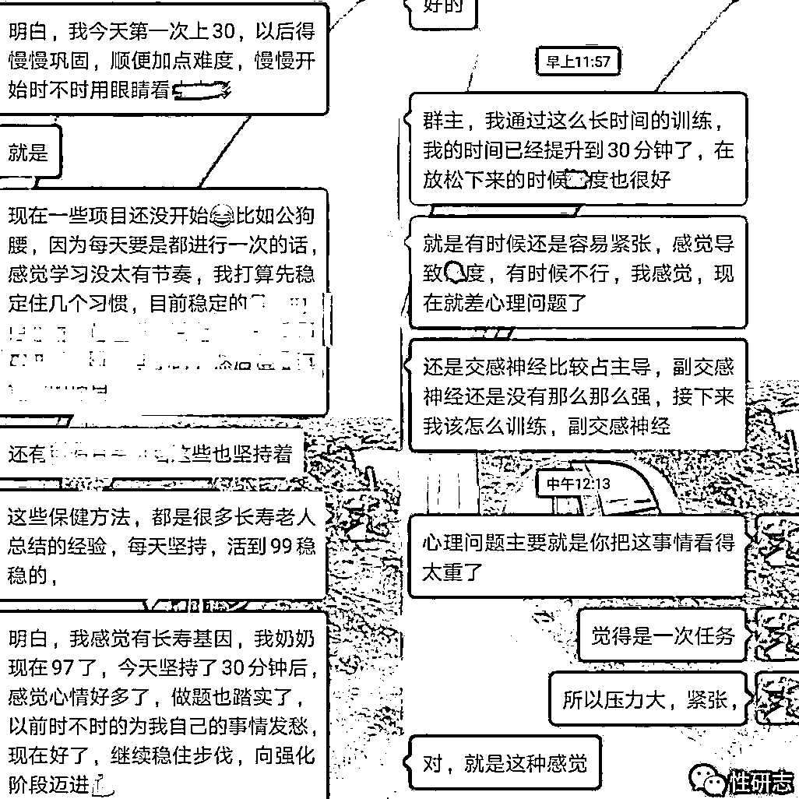

来源：https://tcn5zqk7j4hr.feishu.cn/docx/RdkrdoQIFoUntWxyPJ8cxrBHnog
生财圈的朋友们，前辈们，大家好。
我是今年初加入的生财圈，学习过很多大佬的文章，真的让我开了眼界，涨了见识。
我本来很早之前就想来写一篇文章，但总感觉自己的项目拿不出手。
今天硬着头皮写下这篇文章，希望能抛砖引玉。
本项目和SEX有关，主要涉及到两性技巧、两性健康方面。
我是90后，从小就对做生意感兴趣，在小学的时候就利用暑假时间去车站卖豆浆和馒头，大学期间还做过床上用品、快递站、二手商品、新媒体等项目。
做这个项目完全是因为和一次出丑事件有关。
当年我还在读大三，第一次约白月光出去玩，没想到当天晚上发挥失常，两个月后她提出了分手，让我感到很没面子。
分手后，我就开始研究起了房中术。因为自己出生在医学世家（家里既有中医也有西医），家里最不缺的就是各种医书。
我自己从小也在跟着学，有一定的基础，所以很快就研究出一些门道。我除了自己实践外，还在网上发布了很多文章供其他人了解尝试。
最初我并没想到靠这个赚钱，发出去只是想让更多人一起交流学习，顺便增长自己的水平。后来发现咨询我的人越来越多，我每天都要花两三个小时才能回复完，这才让我萌生了提供付费指导的想法。
最开始的时候，我收费非常便宜，一年的咨询费才298元，每天至少要花大半天的时间在线提供指导咨询。现在想起来，那时候的价格真是低到离谱，简直就是在做公益。毕竟医院的心理咨询师一个小时都要两三百。
虽然价格很低，我交付又很重，好在那几年的流量特别棒。当时我就靠在知乎上发文章，每天主动来加我的都有五六十人，当天转化率高达30%以上，综合转化率将近50%。我就靠298元/年的咨询费，最高的时候一天可以突破6000元，最高峰的时候，一个月就赚了13w。
就这样做了将近一年时间，我就放下了这个项目。主要原因有两点。
1.交付太重，每天提供的咨询时间太长了吃不消。为了保证及时回复，我出门聚餐都要带3个手机，感觉自己就像个客服一样。
2.家里让我去接手药材生意，时间上忙不过来。
药材生意做了3年多，细节都理顺后，空闲时间多了起来，我又想到了这个咨询项目。
为了减轻负担，我从去年开始就陆陆续续在找合伙人，想一起把这个项目做大点，顺便也帮我分担一些咨询压力。
找了大半年终于找到了2位男科医生。每次我忙不过来的时候，我就把学员推给他们，请他们帮忙指导。他们搞不定的，再来问我。每个学员我支付给他们一定数额的分成。
你们可能会好奇，男科医生是科班出身的，难道还需要来问我怎么处理？
我以前也有这样的疑问，为什么医院的医生搞不定性能力问题？后来和他们熟悉后才发现几个真相。
1.泌尿外科医生就是大家熟悉的男科医生。（大部分公立医院都是叫泌尿外科，私立医院叫男科）
这个科室的医生主要是治疗生殖系统方面的疾病，比如各种尿结石和复杂性肾结石；肾脏和膀胱肿瘤；前列腺增生和前列腺炎；睾丸附睾的炎症和肿瘤；睾丸精索鞘膜积液；各种泌尿系统损伤等等问题。（这些疾病都算是器质性病变，器质性问题必须通过药物或者手术治疗）
像男性性能力方面的问题，如果不是因为前面这些疾病引起的，即是功能性问题，医生也没有好的办法。（所以我在招收学员的时候，凡是有器质性病变的，都会建议去医院治疗好了再来解决功能性问题）
在部分欧美发达国家，单纯的男性性能力问题，有专门的科室或者机构，通过心理调节、行为训练来纠正这个问题。但在我们这里因为各种原因，大部分医院都直接把这个问题扔给了泌尿外科。
这里面有个很重要的原因就是纠正这个问题，时间成本太高（至少需要3-6个月的时间，甚至一年以上）、效益又太低，所以没有解决问题的动力。
2.单一的性能力问题，只影响脸面，不影响性命，甚至都查不出来身体出了什么问题，体检指标一切正常。
这种情况在医生看来都是小问题，他们不会花大量时间来给求助者提供心理辅导或者传授一些知识，成本太高了。而且很多医生自己也不知道如何处理这个问题，因为这个不是他们重点学习的内容。
他们最多就是安慰求助者几句，叫他放松心情，多锻炼，注意休息。情况严重的，会给他开几盒只管一时的药物。实际上都解决不了根本问题。
我的学员里面，至少有40%的人，都曾去过三甲检查过，身体没有任何问题，但就是不行。吃了医生开的药，虽然可以暂时变得厉害，但是副作用也非常明显。
所以，我找的医生在上线之前，我都会先把我的指导方法告诉给他们，他们再结合自己所学的内容灵活运用。
有了帮手后，我连续几次提高咨询的价格，同时也加大了引流力度。从去年下半年，扣除各种开支，这个项目平均每个月可以给我带来5w的利润。
在当年，我就是在知乎和公众号上面发布文章引流。文章的内容主要就是对男性问题产生的原因分析、解决办法思路、需要避开的坑有哪些。
因为内容都是有理有据，且还有不少老学员会定期反馈一些好的效果，甚至还有转介绍，帮我打了不少广告。所以引流效果一直不错。但最近一年的引流效果和成交概率可以用惨不忍睹来形容。
一方面各个平台管理越来越严格，写的文章动不动就要求删减，还有些平台都不能发布这种文章了。到目前为止，我发现管理较松的平台就是公众号、知乎、B站。
另一方面，现在粉丝的购买欲望下降了。俗话说，饱暖思淫欲。现在经济不好，很多人只想先解决温饱问题，享受只有先放一边了。
还有一个问题我也是临时想到的，那就是我引流的对象只是男性。男性的购买力比女性低。如果我把引流的对象扩展到女性，会不会效果会更好呢？毕竟，“他好我也好”啊！
虽然我自己引流的效果不好，还好我上半年找了几个专门做引流的小伙伴帮我引流。我花了两天时间，把我近几年产生的聊天记录进行整理，汇总出一篇比较完整的成交话术，里面包含了绝大部分问题的应对方案，并且定期更新。如果有遇到实在是回答不上来的问题，可以马上联系我解决。
为了让对方放心引流，我直接把成交环节放在他们自己手上，每次成交后，留下之前谈好的收益分成（30%），剩余部分就转给我。学员的交付仍然由我和自己的团队人员完成。
实际上对于引流的小伙伴来说，将引流的粉丝进行转化，带来的收益远高于直接将粉丝低价卖出去的收益。这是一件双赢的事情。
为了做好交付，我自己编写了一套5万多字的训练课程，这套课程就是作为学员的教材使用。这套课程里面包括了日常锻炼、行为训练、饮食调整、身体保健、两性技巧、心理疏导等多个方面内容。
除了提供教程，我们还会根据学员的个人特殊情况，给予一些针对性的建议方案。另外，我们还提供不限次数的指导咨询，确保他们在每一个训练周期里遇到的问题都能顺利解决。
通过以上方式，我们的学员只要坚持训练，定期向我们反馈训练情况，都能获得很不错的训练效果。
在这里放两张学员训练效果反馈图，因为聊天内容虎狼之词太多了，所以我只放两张图片，敏感词语也打码了。还望星主大人高抬贵手。

本项目的缺陷有5点：
因为话题比较敏感，很多平台都不让宣传，引流渠道受限。
因为本项目提供的是知识指导服务，而且指导内容在短时间内变化不大，所以没有复购的需求。我统计了一下，只有大概不到5%的复购。这部分学员主要是之前购买服务后，没坚持练习，指导时间过期了。
因为项目的特殊性，基本上没人帮忙转介绍。到目前为止，转介绍的只有3人，他们还是亲兄弟关系。我只有在和学员沟通中，详细咨询对方的训练效果，然后截图保存来帮自己打广告。
我们目前一年的指导费是2000-4000元（根据困难程度而定），两年和终身的指导价会高一些。这个价格看似不便宜，实际上跟我们投入的时间和精力比起来，可以说是白菜价。（现在心理咨询师一个小时的单价是200-800元）
因为这个训练不是几天时间就可以搞定的，普遍都是几个月甚至一年以上才能出结果，我们只能提供相对应时间的咨询服务。
平均一个学员几个月的聊天记录可达上百页，所以我现在每天至少要保证13个小时在线解答问题，交付压力特别大。这个问题我除了提高咨询费，还没想到更好的办法。但咨询费太高，下单率也会受影响。
本项目基本情况就是这样，恳请各位前辈提出宝贵的意见和建议。
祝大家生意兴隆，财源广进！